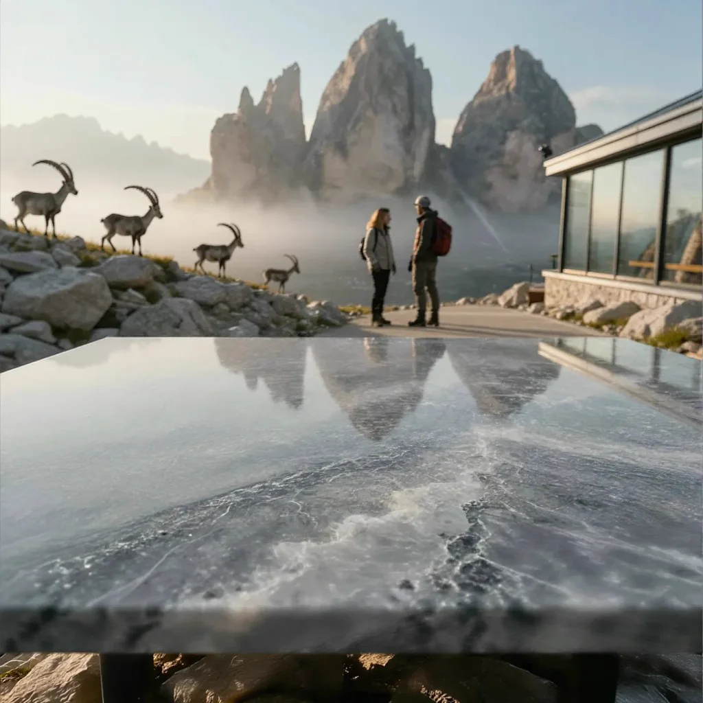
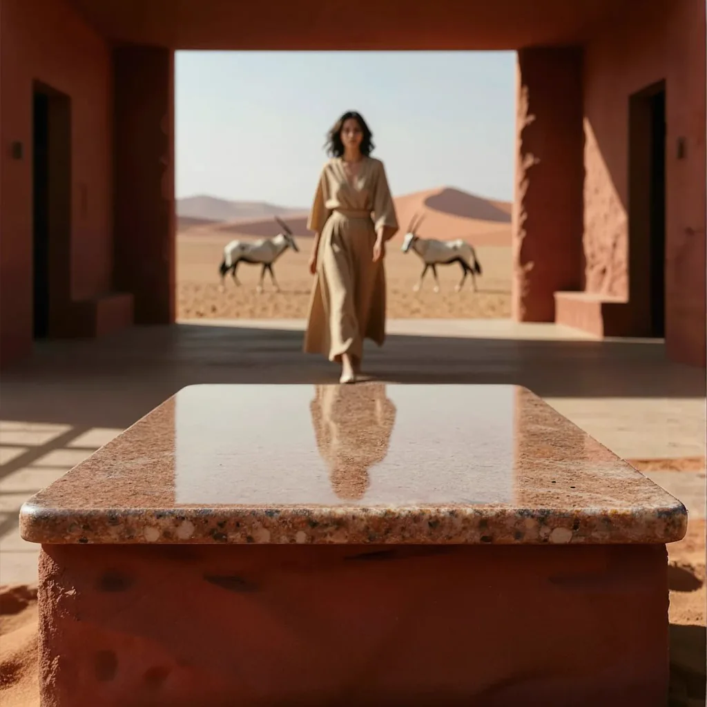
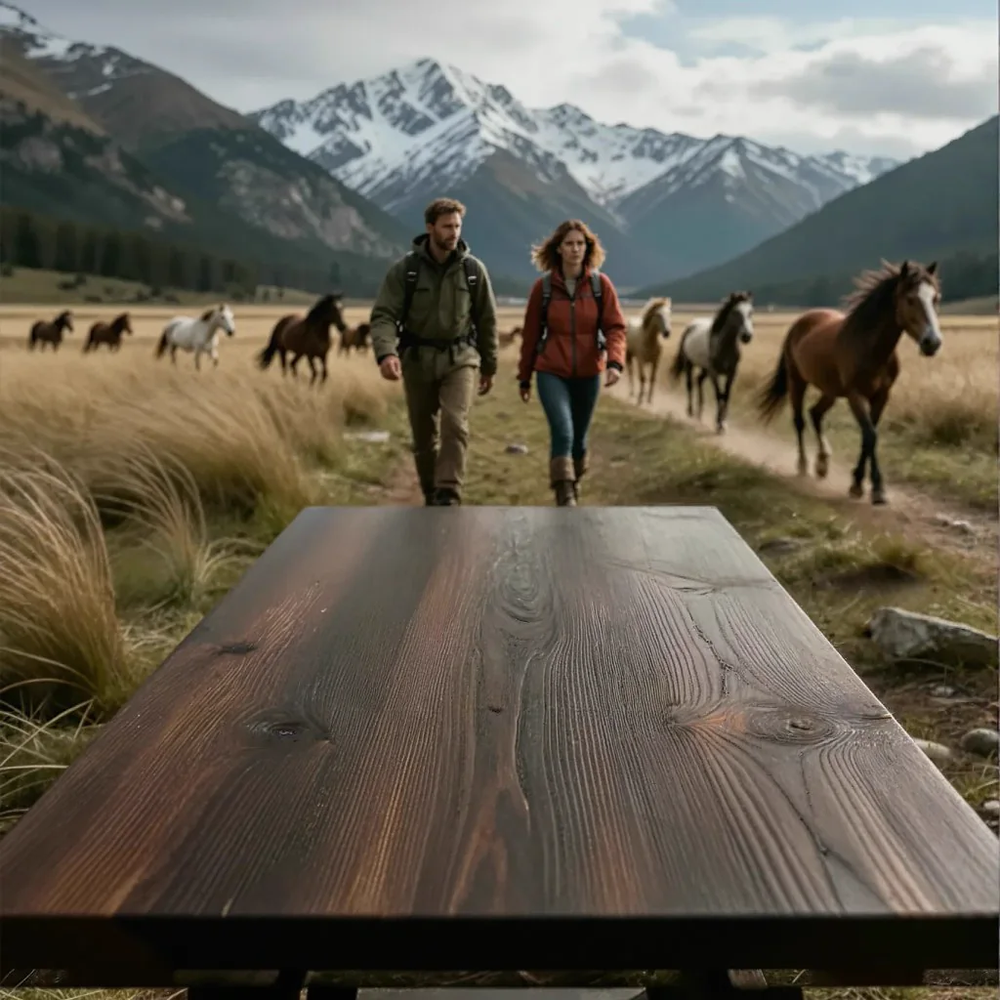
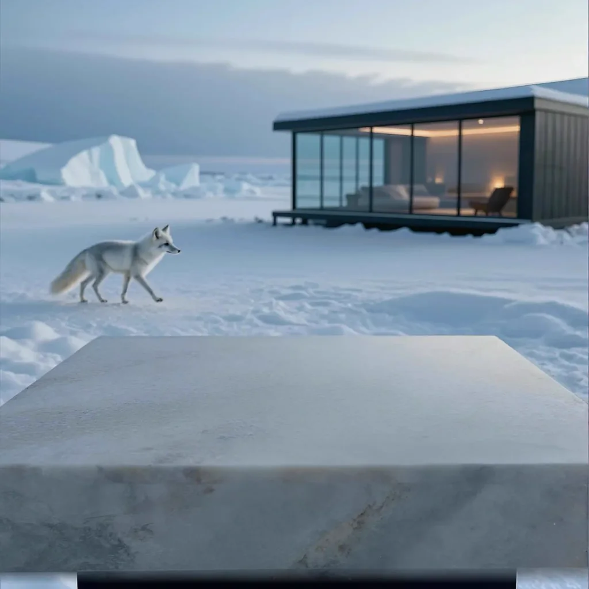

01 Prework
Public model APIs came before the product.
Before building ProductBackground, I published and iterated on image-generation, image-to-image, enhancement, and upscaling models through Replicate. That work made model packaging, input and output contracts, runtime constraints, and remote inference tangible—and became technical prework for the more controlled end-to-end product.
02 Problem
Generate the world. Keep control of the product.
Many AI product tools begin with an uploaded packshot and combine scene generation with product rendering. ProductBackground separates those responsibilities: AI creates the atmosphere, architecture, materials, depth, lighting, people, wildlife, food, and props, while the approved product, packaging, labels, and typography remain outside the generative step.
The deliberately unoccupied foreground is functional production space, not a missing subject. Its flat surface, frontal camera, and straight horizon give retouchers a credible plane for placing products roughly 10–35 cm tall and constructing accurate scale, contact shadows, and reflections in Photoshop.
03 System
A backplate-first pipeline built for professional finishing.
Users describe a complete lifestyle setting through seven practical building blocks: character, animals, food, objects, surface, lighting, and location. ProductBackground generates the empty backplate, lets selected results be extended horizontally or vertically, supports upscaling up to 96MP, and exports a master PNG for product placement and retouching in Photoshop.
- 01A deliberate production boundaryThe generated environment can be explored quickly, but exact product geometry, approved packaging, and brand copy stay under human control.
- 02Format is part of the workflowHorizontal and vertical outpainting create useful space for ecommerce, website heroes, campaigns, and mobile layouts instead of forcing one destructive crop.
- 03Built for the layered masterPhotoshop-ready PNG export and output up to 96MP let teams finish product placement, shadows, reflections, typography, and channel variants with professional tools.
04 Role
End-to-end ownership across product, interface, code, and AI workflows.
I shaped the product logic, designed the interface, built the full-stack application, developed and integrated ComfyUI pipelines, connected storage and compute infrastructure, and worked through the operational edge cases of a real service. The project is the clearest expression of how I connect disciplines around one user outcome.
05 Evidence
A live product with visible methods and real outputs.
The public product now combines guided backplate generation, free scene prompting, a curated gallery of verified results, reusable prompt examples, horizontal and vertical outpainting, output up to 96MP, and Photoshop-ready PNG export. The published workflow is explicit: describe the world, generate the backplate, extend or upscale the selected result, and finish with the approved product in Photoshop.



